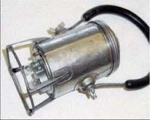

Voici un récit de ce qui arriva concernant l'"ovni" de Carbondale.
A ce moment je was staying over chez une petite amie à approximativement 3 patés de maisons de l'étang en question.
Nous étions sortis d'avant et dormions ce matin-là. Un ami journaliste m'appela et dit que quelque chose se passait au
Parc Russell (l'étang se trouve au bord du Complex de Jeux du Parc Russell au SSE).
Je m'habillais immédiatement, attrapait un appareil photo et un calepin, et marchait vers le site. Il y avait là 4
officiers de police, et une petite foule, comptant 25 personnes environ, principalement des résidents de la zone
environnante. J'étais le 1er membre des médias sur la scène.
A ce moment, le chef de la police de Carbondale Paul Kelly était en vacances en Floride, où vit son frère. Le
lieutenant Det. Francis "Mitch" Dottle occupait le poste de chef en service. Les autres officiers sur la scène étaient
le patrouilleur John Barbaro, le patrouilleur Walter Connor et le patrouilleur à mi-temps Bob Leonard (Kelly, Dottle,
Barbaro et Leonard sont aujourd'hui à la retraite. Connor est mort il y a quelques années).
En regardant mes notes de l'époque, j'ai approché Dottle et dit, "Mitch, qu'est-ce qui se passe ?" (Dottle et moi
avions été amis pendant des années. Nous avions pêché ensemble, et presque chaque jour après le travail nous étions
arrêtés pour quelques verres. Nous étions et sommes de bons amis).
Il répondit, "Je ne suis pas sûr. 3 enfants ont dit avoir vu une lumière venir du ciel et tomber dans l'étang".
Interrogeant les officiers de police qui avaient été sur la scène pendant la plupart de la nuit, on me dit que
lorsque l'incident fut signalé pour la 1ère fois les officiers répondant virent "une lumière" dans l'étang et qu'après
un moment la lumière s'atténua et disparût.
L'étang en question était un étang de vase près d'une vieille casse. Sur le côté est se trouvait un haut banc de
vase. Sur le côté ouest se trouvaient les restes d'une vieille voie ferrée qui retournait vers la casse. Sur le côté
nord se trouvait la barrière du Parc Russell. Et au sud se trouvait un banc de vase plus petit. L'étang était
considéré traître parce que quiconque glissait dedans depuis les bancs de vase aurait eu du mal à en sortir, parce
qu'il était pollué, qu'il avait un fond vaseux et boueux couvert de débris (tous types de détritus, depuis les vieux
pneus et d'autres parties de voitures, caddies, etc.).
Par ailleurs, cet étang n'avait pas été utilisé depuis des années et la casse ne fonctionnait plus, fermée depuis
longtemps.
Initialement, Dottle se demandait quelles étapes entreprendre. Bien que sceptique
parce que les 3 gosses en question étaient "connus" de la police comme étant plus ou moins des fauteurs de troubles,
Dottle n'était pas prêt à juste écarter leur histoire comme un canular.
Mais avec le temps, un autre problème se dégagea. La nouvelle de l'incident se répandait et une grande foule se
formait. La congestion du traffic dans la zone devint un problème majeur. Et, à cause des conditions de l'étang de
vase et des environs immédiats, Dottle était préoccupé par le fait que quelqu'un puisse se blesser. Par exemple, la
police devait régulièrement repousser les gens, y compris de petits enfants loin du haut banc de vase sur le côté est
de l'étang de peur que quelqu'un tombe, glisse le long du banc dans l'étang.
Le Département de Police de Carbondale était un petit département, généralement avec juste un officier à la réception
et 2 patrouilleur faisant leur garde. La logistique devenait un problème très ardu. Le sergent Albert Mazza,
l'officier à la réception ce jour-là, rapporta que les téléphones de la police furent tied up de curieux appels.
Dottle fut forcé de garder la garde de nuit (ce qui était un problème en soi parce que Carbondale était une ville en
difficultés financières).
Le temps passant, quoi qu'il fut dans l'étang devint secondaire par rapport à la sécurité publique. Des centaines de
gens assiégeaient maintenant le site. Les communautés voisines envoyèrent la police pour aider. Les médias de la
presse arrivaient de partout. Les services de dépèches reprenaient l'histoire. Des "experts des ovnis" commençaient à
arriver, et certains d'entre eux racontaient des contes fantastiques (comme la manière dont cet incident ressemblait à
un en Russie !).
Avec le problème majeur du contrôle de la foule (il était vraiment dommageable que les gens se rassemblent et
endommagent le cimetière voisin de Sainte Rose de Lima, qui bordait la route menant à l'étang) la police était
débordée. Les routes menant à la zone étaient si embouteillées que si une urgence survenait où une ambulance ou un
camion de pompiers aurait été nécessaire, qu'ils n'auraient jamais pu passer.)
L'écusson de la Patrouille Aérienne Civile
Finalement, Dottle requit l'aide de la Patrouille Aérienne Civile pour contrôler la
foule. Ils arrivèrent avec un camion avec des inscriptions de la Patrouille Aérienne Civile sur le côté (ceci
débouchera plus tard sur des rumeurs selon lesquelles "l'Air Force était là").
Après 5 heures environ, je revins à la maison de mon amie pour avoir un sandwich. Lorsque je revins sur la scène 10
mn plus tard, je vu arrêté par un jeune en uniforme de la Patrouille Aérienne Civile.
Le garçon avait un calibre 45 attaché à sa ceinture. Je dis au petit de se toucher, et le dépassait. Je trouvais
Dottle et lui dit qu'il y avait un garçon avec un 45 là-bas qui gardait la route. Dottle alla immediatement voir le
gars en charge de la PAC et lui demanda de désarmer le petit et qu'il (Dottle) ne
voulait voir personne d'autre portant ou transportant une arme à feu que la police.
Il fut décidé d'essayer de drainer l'étang. Plusieurs camions de pompiers furent amenés et les tuyaux déposés. Un
camion, du Bourg de Mayfield voisin, roula le long du bord ouest de l'étang et une couverture de bois partit,
endommageant le camion.
Au bout d'un moment, il devint évident que d'essayer de drainer l'étang était une mauvaise idée. Ne serait-ce que
parce que l'eau et la vase étaient telles qu'elles commençaient à obstruer les pompes.
Le temps passa, la foule devint de plus en plus grande et les nouvelles continuaient de se répandre. Aux
quartiers-généraux de la police, le sergent Mazza recevait des appels de CBS News, Los Angeles et même d'Angleterre. Si quelqu'un ailleurs dans la ville avait une urgence et avait besoin de
la police, il aurait été impossible de joindre les quartiers-généraux de la police.
Durant tout ce temps rien n'était visible dans l'étang, aucune lumière, rien qui indiquerait quoi que ce soit
d'inhabituel.
Vers 17 h je me rendis à mon bureau et écrivait un papier. Puis, j'achetais des cafés et des beignets pour Dottle et
moi et retournait à la scène.
Je noterai qu'à part pour 2 brefs voyages à la maison de mon amie, 3 tours à mon bureau pour faire des articles et 2
brefs voyages au café, je fus sur la scène depuis pratiquement le début jusqu'à la toute fin. Par "sur la scène" je
veux dire au bord-même de l'étang.
Vers la fin, un gars approcha Dottle et dit qu'il venait de Binghamton, New York (à 1 h de route environ de
Carbonsdale par la nationale), qu'il était plongeur et qu'il avait entendu parler de l'incident aux actualités. Il
avait son scaphandre dans le coffre de sa voiture et proposait d'entrer dans l'étang pour jeter un oeil. Dottle
n'accepta pas tout de suite. Il s'inquiétait de la responsabilité sur le gars était blessé -- ou se noyait.
Gardez à l'esprit que toute la scène était un chaos à peine contrôlé. Même avec l'aide de département de police
voisins (qui avait peu de départements - 2 ou 3 officiers au plus, et dans certains cas 1 seul officier), la taille de
la foule présentait des problèmes majeurs.
Une lanterne de chemin de fer Conger, également vendue aux magasins Sears Roebuck sous la marque "Homart", fabriquée
à partir de Flashlight Museum - Van O Lite Inc < Graeber, Matthew J.

Finalement, Dottle décida que la seule manière de mettre fin à ceci d'une manière ou d'une autre était de récupérer
ou identifier ce que les 3 enfants avait prétendument vu pénétrer dans le lac, quoi que ce fut. Le plongeur reçu la
permission d'entrer. Il s'habilla et entra dans l'étang. Il avait une lanterne parce que sans aucune lumière vous ne
pouviez pas voir à un pied devant vous dans l'eau murky et vaseuse.
Après avoir cherché un peu dans la zone où les officiers de police les premiers arrivés avaient vu quelque chose
luir dans l'eau, le plongeur émergea en tenant une vieille lanterne de chemin de fer.
Je noterai qu'il avait dans son autre main la lanterne avec laquelle il était entré dans l'eau (ce qui écarte les
rumeurs selon lesquelles la lanterne qu'il avait récupérée était la même que celle qu'il avait prise pour entrer dans
l'eau).
La lanterne de voie ferrée qu'il avait récupérée était d'un type pas inhabituel dans la région. S'agissait d'une
ancienne zone de mines et voies ferrées, il y avait des centaines si ce n'est des milliers d'entre elles tout autour.
Vous aviez des chances d'en trouver une cachée dans la plupart des caves de Carbondale. Certains bars en avaient même
sur les murs comme décorations.
Peu de temps après la récupération de la lanterne, les foules disparûrent. La police et les autres personnels
d'urgences firent de même. Je me rendis à mon bureau pour rédiger l'histoire et rencontrais alors Dottle à un de nos
hangouts où un journaliste très fatigué et épuisé et flic buvaient des bières et se racontaient des histoires depuis 1
h ou 2.
Ce fut plus tard que l'un des 3 garçons impliqués confessa que lui et ses compagnons avaient pris la vieille
lanterne de l'une de leurs maisons et perpétré un canular.
Ceci étant dit, il y eut une autre "lumière" dans le ciel à peu près au même moment où les enfants signalèrent la
lumière dans l'étang. Cette autre "lumière" était visible depuis la nationale 81, approximativement à 16 miles au sud
de Carbondale. Elle fut vue par un automobiliste roulant sur la I-81 juste à l'est de Dunmore. Mais la "lumière" fut
vue dans le ciel à l'est de la of I-81. Carbondale est à l'est de la I-81. La lumière "light" se déplaçait sur une
direction ouest vers nord. Je suis familiar avec la portion de la I-80 depuis laquelle cette 2nde lumière a été
observée. Elle passe à travers les bois juste avant que vous atteignez Dunmore-Scranton, de sorte qu'aucune lumière de
surface ne luit dans le ciel. Revenant de parties de pêche, j'ai vu de nombreux météores alors que je roulait sur cette portion de la I-81 de
nuit. Je n'ai pas vu celui-là en particulier, mais l'experience me dit qu'il s'agissait juste d'un autre météore (une étoile filante).
Dans le même temps, j'ai revisité le l'étang de vase du Parc Russel le matin suivant et tout était paisible.
Maintenant, rien de ceci n'est très excitant. Mais c'est exactement ce qui s'est passé. Et, assez brutalement, les
conneries que j'ai lu sur cet "ovni" sur l'Internet par des gens qui n'étaient même pas là est amusant. Mais que de la
fantaisie.
Laissez-moi ajouter une chose. Lorsqu'il s'agit d'ovnis, je suis sceptique
mais loin d'être fermé. Je reconnais la possibilité de leur existence. Et si un ovni est allé dans cet étang de vase,
en tant que journaliste, j'aurais eu l'histoire du millénaire. J'aurais sans l'ombre d'un doute écrit dessus comme
s'il n'y avait pas de lendemain. J'aurai eu des visions de Prix Pulitzer et de millions de dollars dansant dans ma
tête. Le journaliste qui écrivit sur le 1er ovni vérifié ! Célébrité, gloire et richesse ! Mais hélas, ce n'était pas
le cas. C'était juste une vieille lanterne de voie ferrée jetée dans l'étang par un trio de délinquants s'amusant aux
dépends des autres.
Et puis encore une fois, qui sait ? Peut-être le gouvernement m'a-t-il payé des millions pour rester muet. Mais si
c'est le cas, comment se fait-il que les percepteurs continuent à m'envoyer des lettres de rappel ?